Gunnar Montseny Gens
Developing mathematical and computational tools for astrodynamics, celestial mechanics, and the future of human space exploration.
About
I’m a mathematics and physics graduate currently pursuing an M.S. in Aerospace Engineering Sciences at the University of Colorado Boulder. I’m passionate about space exploration and eager to contribute to projects in astrodynamics, flight dynamics, GNC, human spaceflight, and Earth observation data analysis. My research has explored the Mars–Phobos system and the atmospheres of lava planets, and I’ve led a multidisciplinary team developing a lunar pressurized rover concept. I enjoy combining analytical modeling with creative problem-solving, and I’m especially drawn to astrodynamics and bioastronautics, including technologies that will make long-term Mars settlement possible.
Current Research
I am developing numerical tools for astrodynamics and studying the geometry of phase space in Hamiltonian dynamical systems. My current interests include periodic orbits, multi-body dynamics, symplectic methods, and trajectory design for future space exploration.
Research Interests
Featured Projects
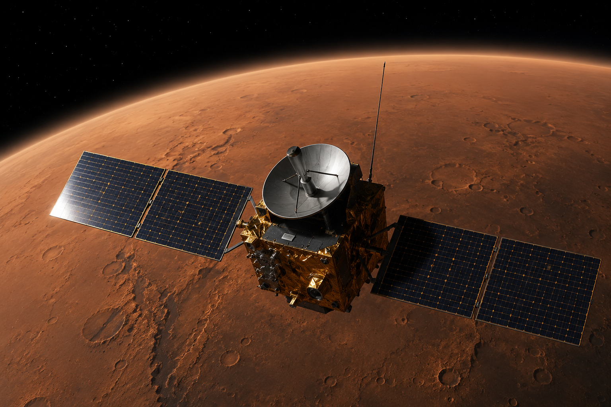
LMO Science Satellite
Numerical study of.
Download PDF →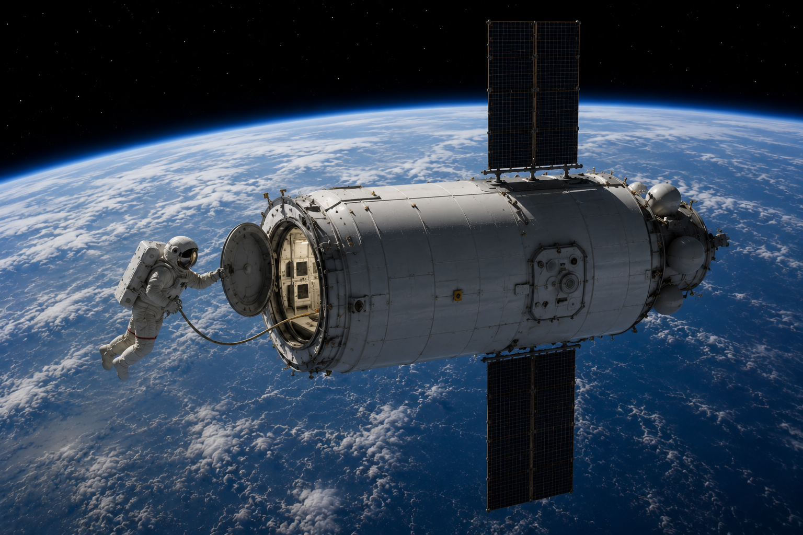
LEO Habitat
Numerical study of.
Download Final Report →Download Presentation →
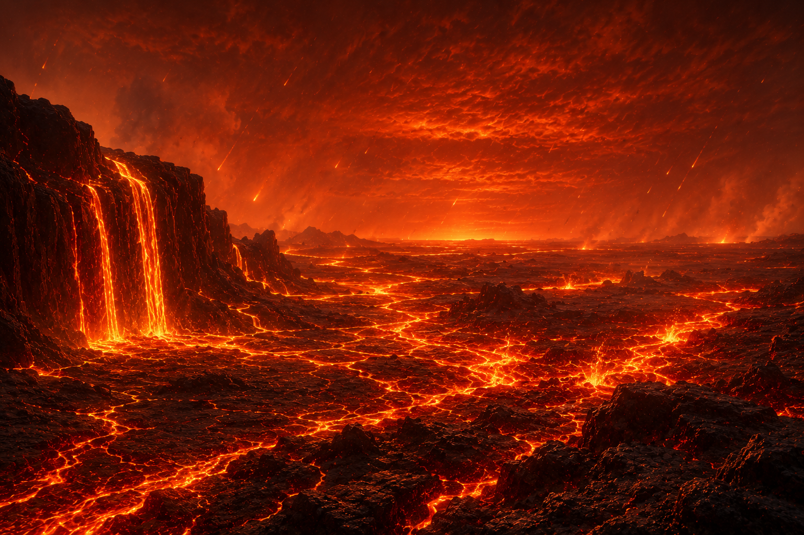
Lava Planet Atmospheres
Radiative transfer study of the evolving atmosphere of the lava exoplanet K2-141b using atmospheric modeling tools.
Download PDF →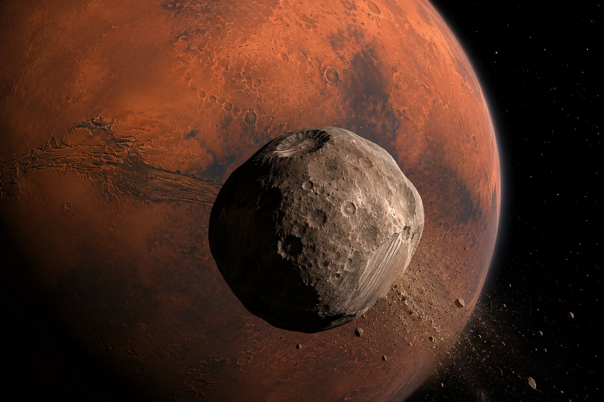
Impact Dynamics on Phobos
Numerical study of low-energy transit trajectories and impact dynamics near Phobos using restricted three-body problem techniques.
Download PDF →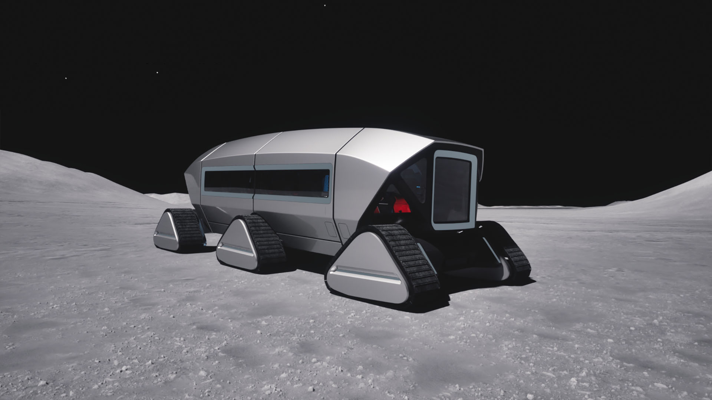
Lunar Entertainment Vehicle (LEV)
Pressurized lunar rover.
Download CONOPS →Download Presentation →
Software Toolkits
Life
Having lived and studied in Spain, the United States, and Canada, I've been fortunate to experience different cultures, perspectives, and academic environments. These international experiences have shaped the way I approach both engineering and life, reinforcing the importance of curiosity, adaptability, and collaboration. Outside of my academic and engineering work, I enjoy staying active through basketball, volleyball, and hiking, exploring new places through travel, and expressing creativity through origami. I'm also an active member of the Rocky Mountain Mars Society, where I enjoy connecting with others who share a passion for the future of human space exploration. I believe that curiosity—whether sparked by scientific research, new landscapes, or different cultures—is one of the greatest drivers of personal and professional growth.
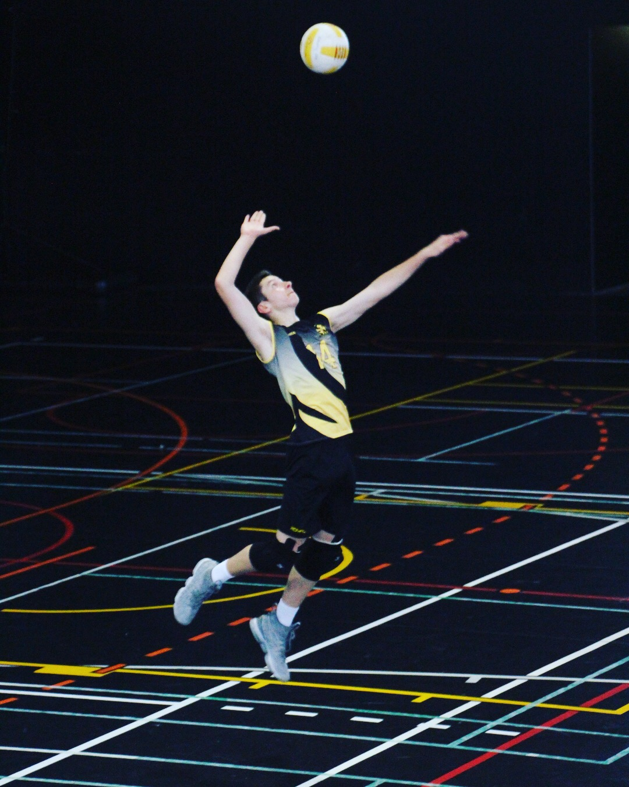
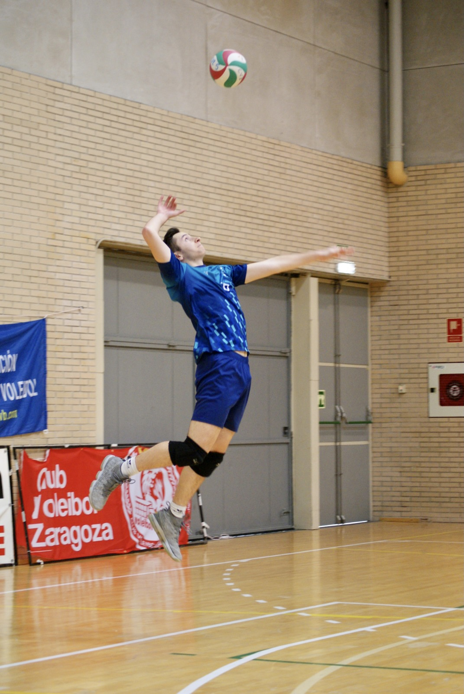
Basketball & Volleyball
Team sports have always been an important part of my life, teaching me the value of collaboration, discipline, and perseverance.
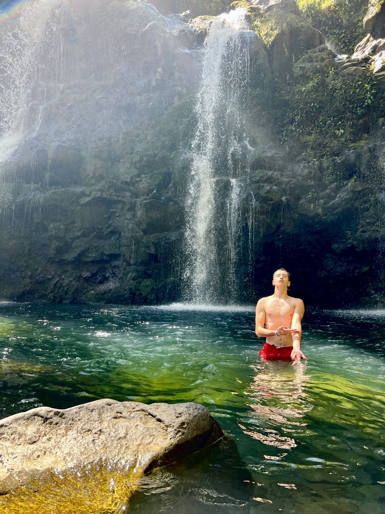


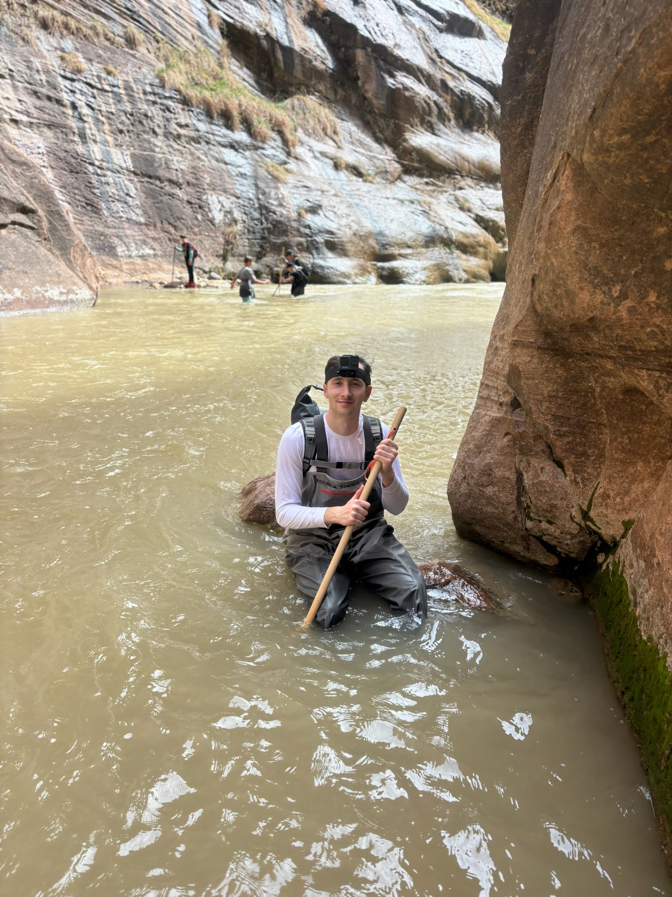
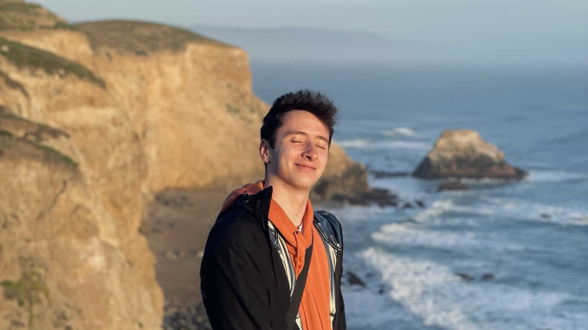
Hiking & Travel
I enjoy exploring new landscapes, discovering different cultures, and experiencing the outdoors through hiking and travel.


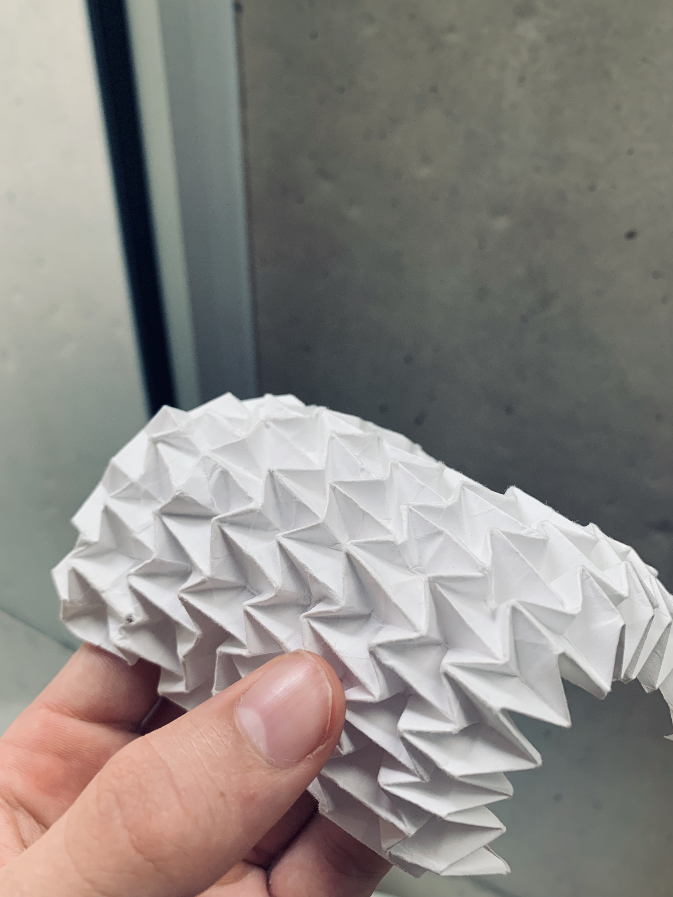
Origami
Origami combines geometry, creativity, and patience, providing a unique balance between analytical thinking and artistic expression.
Filmmaking
Filmmaking allows me to explore my creative side, while putting memories together to create a story that that evokes emotions for the viewer.
Rocky Mountain Mars Society
As an active member of the Rocky Mountain Mars Society, I enjoy engaging with others who share a passion for the future of human space exploration.
International Background
Living and studying across Europe and North America has strengthened my appreciation for collaboration, cultural diversity, and lifelong learning.